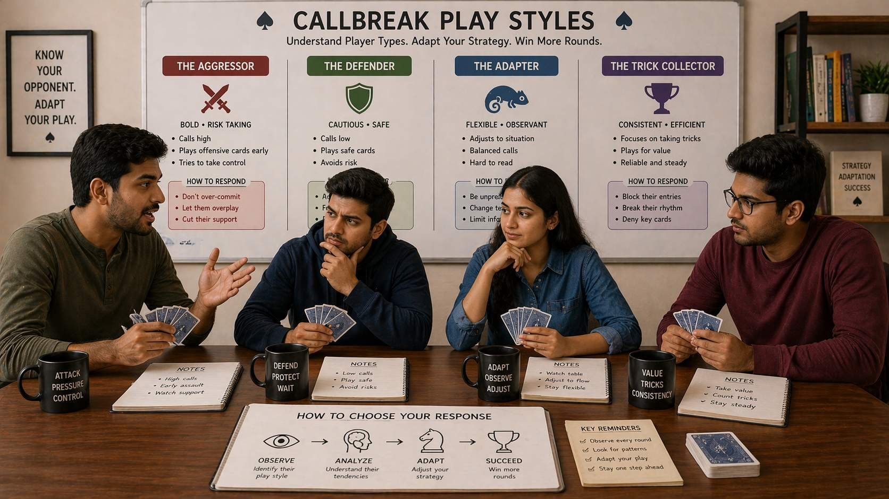

🪶 Introduction
Every Callbreak player has tendencies — preferred ways of approaching the game that show up consistently across rounds. Some players attack aggressively, others defend cautiously, and still others adapt fluidly to whatever the round demands. These tendencies are play styles, and recognizing them — in yourself and others — is a major strategic advantage.
🖼️ Callbreak Play Styles Overview

🎯 What Are Play Styles?
A play style is the consistent approach a player brings to Callbreak decision-making, including:
- How they approach calling
- When they choose to attack versus defend
- How they manage risk
- How they interact with partners and opponents
Understanding play styles helps you predict behavior, adjust your strategy, and choose counter-plays that exploit specific weaknesses.
⚔️ The Aggressive Play Style
Aggressive players prioritize taking action over preserving resources. They tend to call high, lead boldly, and use their cards decisively.
Identifying Aggressive Players
- Making high calls even with moderate hands
- Leading frequently instead of waiting for opportunities
- Using trump cards readily instead of hoarding them
- Playing quickly and decisively
Strengths
- Can put pressure on opponents and force mistakes
- Generates momentum when opponents are caught off guard
- Prevents opponents from playing too conservatively
Weaknesses
- Can exhaust resources prematurely
- Becomes predictable if overused
- Vulnerable to players who play disciplined defense
How to Counter Aggressive Players
- Stay patient and let them overextend
- Play conservatively and wait for them to burn through their strength
- Use their aggression against them by forcing difficult decisions
- Do not match their aggression directly
🛡️ The Passive Play Style
Passive players prioritize preservation over action. They call conservatively, avoid leading when uncertain, and prefer to follow rather than initiate.
Identifying Passive Players
- Making low or moderate calls even with decent hands
- Rarely leading unless they have a clear reason
- Saving high cards and trump for specific moments
- Often folding or playing low when they could reasonably compete
How to Counter Passive Players
- Apply pressure in key suits to force them into uncomfortable decisions
- Control the tempo of the round
- Take calculated risks they are unwilling to take
- Avoid being drawn into their conservative pace
🎯 The Tight Play Style
Tight players are highly selective — they enter only when they are confident of success. They call only when they have strong hands and lead only when they see a clear path to winning.
Identifying Tight Players
- Only calling high when they have demonstrably strong hands
- Rarely leading with marginal holdings
- Carefully tracking what has been played before committing
- Appearing deliberate and methodical before each decision
How to Counter Tight Players
- Apply consistent pressure — their reluctance to play means they may fold more than necessary
- Watch their leads and calls closely — when they DO act, treat it as a strong signal
- Take initiative in suits they avoid
- Do not over-respect their plays
🎲 The Loose Play Style
Loose players play many hands and take more risks than their hand strength might justify. They are unpredictable and may seem to defy conventional Callbreak wisdom.
Identifying Loose Players
- Calling more than their hand warrants regularly
- Leading in multiple suits without clear justification
- Playing high cards on marginal tricks
- Rarely appearing uncertain about their next move
How to Counter Loose Players
- Play discipline against their chaos
- Wait for them to overcommit, then capitalize on their mistakes
- Track their plays carefully
- Let their loose play work against them by staying patient
⚖️ The Balanced Play Style
Balanced players mix aggression and caution based on the situation. They do not follow a single approach but adjust their play to fit the round.
Identifying Balanced Players
- Calls vary based on hand strength and game context
- Sometimes aggressive, sometimes passive, depending on what the round demands
- Adjusts strategy mid-round when circumstances change
- Appears thoughtful and situationally aware
How to Counter Balanced Players
- Focus on fundamentals
- Look for small patterns in their adjustments
- Apply pressure in multiple areas
- Maintain your own disciplined approach
🔄 The Adaptive Play Style (Advanced)
Adaptive players actively change their approach based on opponents, partners, and game state. They actively try to avoid patterns and keep opponents guessing.
Characteristics of Adaptive Players
- Deliberately varies their play style round to round
- Analyzes opponents and adjusts strategy specifically to counter them
- Willing to sacrifice short-term results for long-term advantage
- Highly aware of their own patterns and actively works to conceal them
How to Counter Adaptive Players
- Stay consistent with your own approach
- Watch for genuine patterns rather than assuming they will always adapt
- Do not try to out-adapt them
- Focus on executing fundamentals well
📊 Quick Classification of Player Types
| Behavior Observed | Likely Style |
|---|---|
| Frequently leads, calls high | Aggressive |
| Rarely leads, calls low | Passive |
| Only calls high with strong hands | Tight |
| Plays many situations loosely | Loose |
| Varies approach by round | Balanced or Adaptive |
❓ FAQ
What are the main play styles in Callbreak?
The main play styles are aggressive, passive, tight, loose, balanced, and adaptive. Each has distinct characteristics and can be countered with specific strategies.
How do I identify an aggressive player?
Aggressive players make high calls even with moderate hands, lead frequently, use trump cards readily, and play quickly and decisively.
What is the best way to counter passive players?
Apply pressure in key suits, control the tempo of the round, and take calculated risks they are unwilling to take.
How can I develop a more balanced play style?
Start by honestly assessing your default tendencies, then work on the opposite tendency. Track your performance across different styles and calibrate based on results.
🧾 Summary
Understanding Callbreak play styles creates strategic advantages:
- Aggressive players attack — counter them with patience and defense
- Passive players preserve — counter them by taking initiative and applying pressure
- Tight players wait — counter them by forcing decisions and exploiting their selective nature
- Loose players gamble — counter them with discipline and capitalizing on their overcommits
- Balanced players adapt — counter them with consistent fundamentals
- Adaptive players mislead — counter them by maintaining your own discipline
Developing flexibility across styles makes you a more complete player. Know your default style, work on the opposite tendencies, and learn to read and counter whatever style you encounter.
🔥 SEO Keywords
callbreak play styles, callbreak player types, aggressive vs passive callbreak, callbreak strategy styles, how to counter callbreak players, callbreak adaptable play